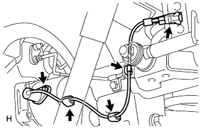
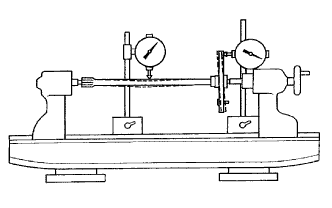

TRỤC CẦU SAU > THÁO |
| 1. THÁO BÁNH XE SAU |
| 2. THÁO TRỐNG PHANH |
| 3. THÁO CẢM BIẾN TỐC ĐỘ SAU TRÁI (w/ ABS) |
|  |
Ngắt giắc nối của cảm biến.
Ngắt 3 kẹp.
Tháo bulông và cảm biến.
| 4. NGẮT ĐƯỜNG ỐNG PHANH |
 |
Dùng SST, tháo đường ống phanh ra khỏi xi lanh bánh xe.
| 5. THÁO CỤM TRỤC CẦU SAU |
 |
Tháo 4 đai ốc.
Dùng SST, đóng trục cầu xe ra.
Tháo gioăng bên vành chặn.
Ngắt phanh sau và tháo bên vỏ cầu xe.
| 6. THÁO PHỚT DẦU TRỤC CẦU SAU TRÁI |
Dùng SST, đóng phớt dầu ra.
| 7. THÁO PHỚT DẦU BÊN TRONG TRỤC CẦU SAU (w/ ABS) |
Dùng SST và máy ép, ép phớt dầu ra.
| 8. THÁO VÀNH CHẶN BÊN TRONG VÒNG BI CẦU SAU TRÁI |
w/o ABS:
Dùng máy mài, mài tấm hãm bên trong.
w/ ABS:
Dùng máy mài, mài hãm bên trong và rôto cảm biến tốc độ ABS.
w/o ABS:
Dùng đục và một búa, cắt hãm bên trong. Sau đó tháo nó ra khỏi trục cầu.
w/ ABS:
Dùng đục và một búa, cắt vòng hãm bên trong và rôto cảm biến tốc độ ABS. Sau đó tháo chúng ra khỏi trục cầu xe.
| 9. THÁO VÒNG BI CẦU SAU TRÁI VÀ VÀNH CHẶN BÊN NGOÀI |
Dùng SST và máy ép, ép vòng bi ra khỏi trục cầu xe.
Tháo vành chặn bên ngoài vòng bi.
| 10. KIỂM TRA TRỤC CẦU SAU TRÁI |
|  |
Dùng đồng hồ so, đo độ đảo trục cầu sau và độ đảo của mặt bích.
| Hạng mục | Điều kiện tiêu chuẩn |
| Độ đảo trục | 1.5 mm (0.0591 in.) |
| Độ đảo mặt bích | 0.05 mm (0.0020 in.) |